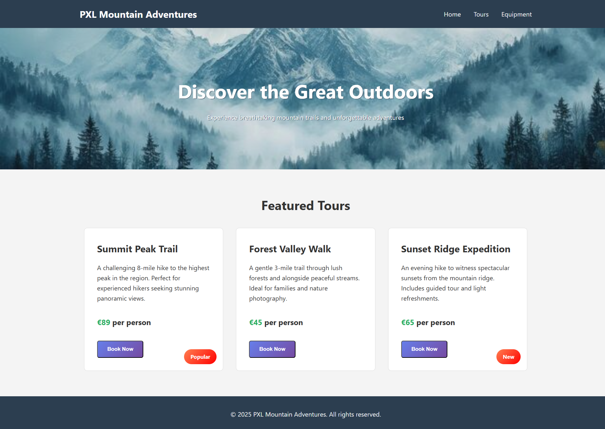

Evaluatie: HTML-CSS
Beschrijving van de evaluatie
Het namaken van een website die trektochten organiseert
Doel van de evaluatie:
Het leren toepassen van de kennis die we al gezien hebben.
- HTML Structuur
- CSS Styling
Reflectie
De PE ging iets moeizamer dan verwacht. Mijn HTML en CSS structuur en kennis waren nog niet op het punt dat ik dit op de gekregen tijd kon doen. Ondertussen kan ik met trost zeggen dat die kennis ondertussen al veel beter is en ik dit nu veel vlotter zou kunnen doen.